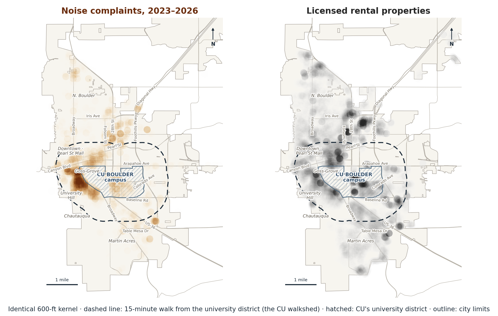
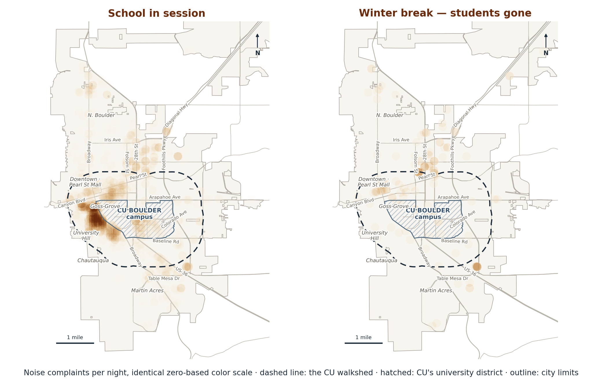
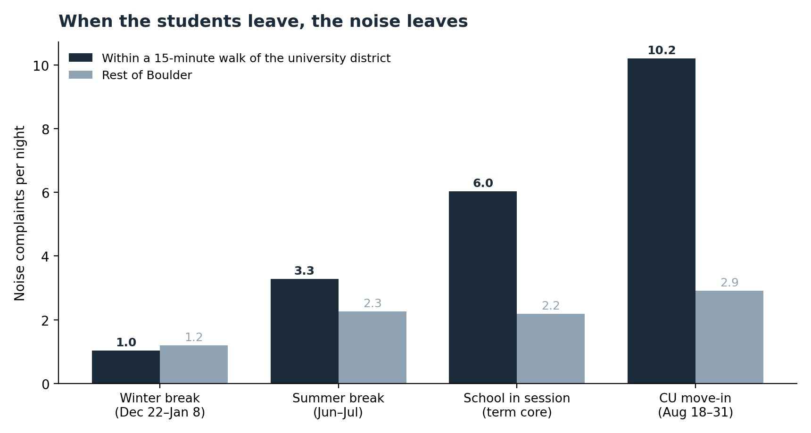
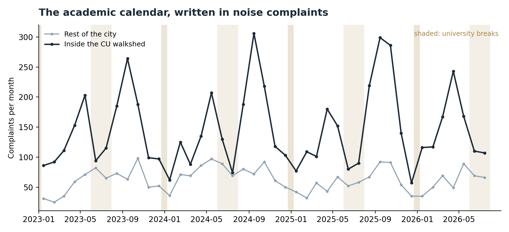
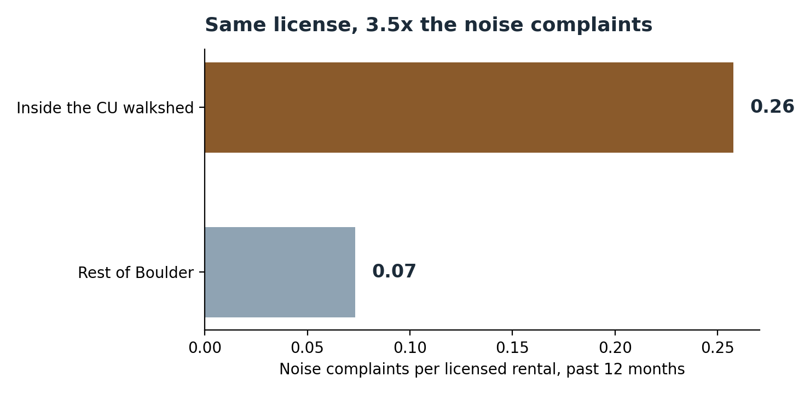
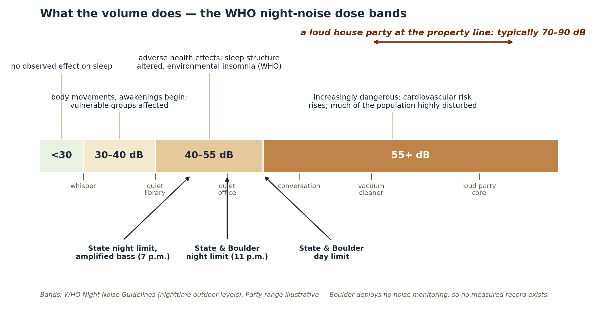
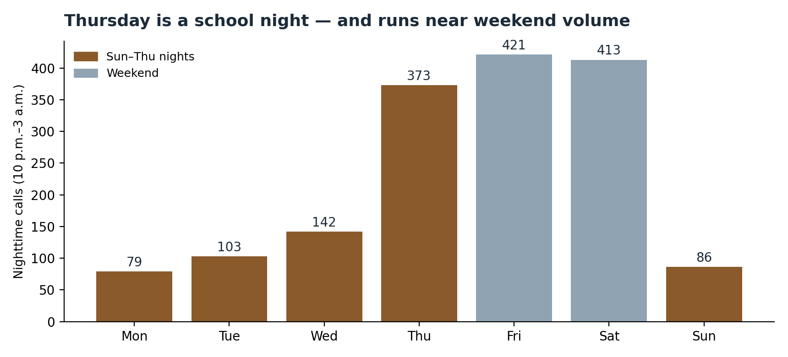
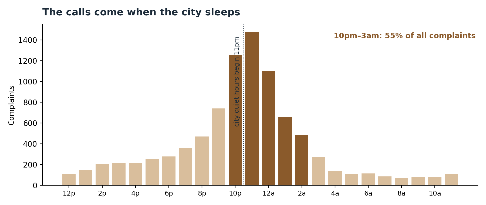
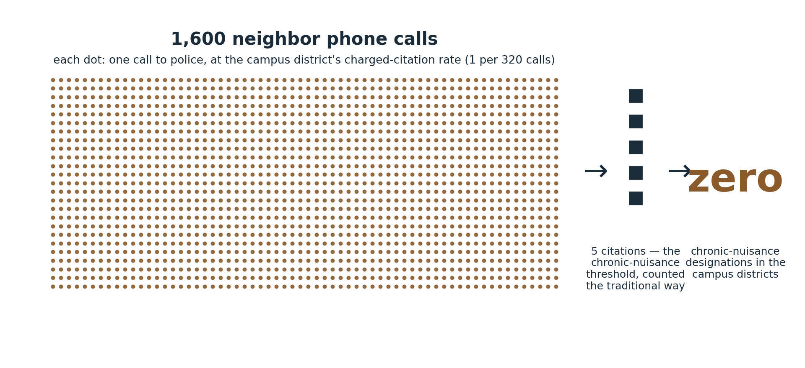

Understanding Noise Pollution in Boulder
Where it is, where it comes from, and who bears it · The Quiet Enjoyment Project · September 2026
Explore the interactive map → Every dataset and script → Methods FAQ → Download the PDF →
First in a series. Every figure in this report comes from a public record: police calls-for-service, the City's rental-license rolls, the county assessor, and the 2020 census. Every dataset and script is published alongside it. The report makes no demands. It sets out where Boulder's noise pollution is, where it comes from, and who lives with it.
Written for Boulder's neighbors. If it concerns you, send it to one.
70% OF BOULDER'S NOISE COMPLAINTS COME FROM THE CU WALKSHED
Since January 2023, Boulder has logged 9,011 noise complaints.1 6,297 of them, 70%, came from within a 15-minute walk of the university district, the area this report calls the CU walkshed. Put the complaints on a map beside the City's licensed rentals and the two pictures are the same picture:

THE NOISE KEEPS CU'S CALENDAR
The noise keeps the university's schedule. On school-year weekends, Thursday through Saturday, the walkshed produces 10.9 complaints a night, which over an eight-hour night is one every 44 minutes. September Fridays and Saturdays run 19 a night. The busiest night in the data was Thursday, October 30, 2025, the eve of Halloween weekend, with 38 calls. Across all term nights the walkshed averages 6.0 complaints a night, 73% of the citywide total. Over winter break it averages 1.0. During breaks the walkshed is quieter than the rest of the city. The houses, the neighbors, and the laws are the same in December as in October. The students are not there.


All rates are per night, so the unequal window lengths (roughly 140 term-core nights a year against 17 deep-winter nights) compare like-for-like.
CU move-in, August 18 to 31, averages 10.2 complaints a night, 78% of the citywide total. Thursday nights run near weekend volume. The noise falls when the students leave, comes back when they return, and peaks when they move in. The rest of the city serves as the comparison. The seasonal forces Boulder shares, weather, daylight, patio season, move the outside-walkshed line too, but far less: from winter break to term, complaints outside the walkshed rise about 80%. Inside, they rise nearly 500%. None of these records identifies a caller or a noisemaker. The attribution is to a place and a calendar, not to any person.
AND IT IS GETTING WORSE
Boulder Police sharply increased noise enforcement on University Hill between 2023 and 2025, a surge our University Hill series will document with its own data release. Complaints went up anyway:
| School year | Complaints, CU walkshed | Change |
|---|---|---|
| 2023–24 | 1,408 | — |
| 2024–25 | 1,515 | +8% |
| 2025–26 | 1,777 | +17% |
Spring 2026 broke the pattern: 651 complaints, up 24%. From January 1 through August 15, 2026, complaints inside the walkshed ran 29% above the same period of 2025. These are recorded complaint calls, and we cannot fully rule out changes in how often residents report (see Limitations).

Monthly complaints inside the CU walkshed, with the rest of the city for comparison. Shaded: university breaks.
OF THESE THREE STANDARDS, BOULDER'S NIGHT STARTS LAST
Two standards govern a Boulder night, the State of Colorado's and the City's, and the City's is by far the more permissive. Fort Collins is shown for comparison:
| Nighttime standard begins | Nighttime standard | Penalty | |
|---|---|---|---|
| State of Colorado | 7 p.m. | 55/50 dB(A) day/night generally; periodic, impulsive, or shrill noise, which amplified bass will typically be, held to 45 dB(A) at night, about the sound of soft rainfall, measured 25 ft past the property line. Exceeding these is prima facie a public nuisance, and any resident may sue to stop it (C.R.S. 25-12) | Court injunction; $100–$2,000 per day for violating it |
| City of Boulder | 11 p.m. | 50 dB(A) at night, 55 by day, matching the state's general limits four hours later; the state's stricter bass standard has no city counterpart (B.R.C. 5-9) | Criminal: up to $2,650 and 90 days |
| Fort Collins (for comparison) | 8 p.m. | 50 dB(A) residential | Petty offense, then misdemeanor |
Every complaint in this report was made while the most lenient standard on this table was in force. Whether a given party exceeded it, nobody measured. Boulder operates no noise monitoring.
IT IS A RENTAL PROBLEM
Six in ten noise complaints citywide come from licensed rental properties. Rentals hold roughly half of Boulder's dwelling units, so that is an overrepresentation, though a modest one. The sharper pattern is concentration: the top tenth of rental addresses that drew any complaint accounts for 37% of all rental complaint calls. Half of Boulder's 10,830 rental licenses sit inside the CU walkshed, and those rentals draw complaint calls at 3.5 times the rate of licensed rentals elsewhere, measured per license (3.3 times per parcel, 2.8 times per dwelling unit; see Limitations):

More than half of Boulder's licensed rentals belong to business entities or to owners who live outside Boulder, and in the chronic-noise areas the share is higher. (This is computed from the holder fields of the City's unabridged public license layer, which we do not republish; see Limitations.) The legal obligations already exist. Every Boulder lease must carry the City's noise disclosure (B.R.C. 12-2-4), and five documented violations in a year expose the property's rental license (B.R.C. 10-2.5). The license is a regulatory handle the City already holds on every parcel in the plume. No record we have obtained, or been produced, shows the City has ever used it. Chronic-nuisance designations found: zero. We have formally requested the City's complete designation records.
28,000 PERMANENT RESIDENTS ABSORB 70% OF THE NOISE
The 2020 census counts 52,815 residents inside the CU walkshed. Set aside the 12,449 who live in group quarters (11,763 of them in CU housing) and the 12,356 household residents aged 18 to 24, whom this proxy treats as students. What remains is the walkshed's permanent population: 28,010 people, 26% of Boulder's population and 36% of its permanent residents, including 3,957 children. They live where 70% of the city's noise complaints originate, and the calls arrive at 4.1 times the rate borne by permanent residents anywhere else in the city (62 versus 15 calls per 1,000 permanent residents per year, both sides measured on the same census-based proxy).
The noise lands at the worst hours. During the school year the walkshed averages 3.7 complaint calls a night between 10 p.m. and 3 a.m., and 6.9 on weekend nights.
A student passes through for a few years and takes the noise along at graduation; the next tenant arrives in August and brings it back. The permanent residents do not rotate. For the 28,010 people who live, raise children, and grow old inside the walkshed, the noise is not a stage of life. It is where they live.
WHAT THE NOISE DOES TO PEOPLE
Noise at these levels is a health exposure, not merely an annoyance. That is the settled position of the World Health Organization and the EPA, and the reason Colorado's statute calls excessive noise "detrimental to the health and welfare of the citizenry" (C.R.S. 25-12-101).

Health effects rise with volume: the WHO night-noise dose bands, the legal limits, and where a house party sits.
The thresholds are low. The WHO's night-noise guideline is an annual-average outdoor level of 40 dB(A), about a quiet library, above which chronic nighttime exposure produces measurable effects: fragmented sleep, awakenings, next-day cognitive impairment. In 1974 the EPA identified 45 dB(A) indoors as the long-term level protective of sleep. Both are long-term averages rather than single-event limits, and an amplified party at a property line typically runs decades of decibels above either.
Sleep does not need to wake to be damaged. The sleeping brain registers noise it never consciously hears, with autonomic arousals, elevated heart rate and blood pressure, and stress-hormone release. At sustained nighttime exposures the literature ties chronic noise to hypertension and cardiovascular risk. The harm accrues quietly, in people who never call the police, which is one reason complaint counts understate exposure.
The scale in Boulder. In the most recent 12 months, excluding the 19th Street block, Boulder logged 2,838 party- and noise-related calls; 1,617 of them, 57%, came in between 10 p.m. and 3 a.m. For each of those nighttime calls, count every residential parcel within 600 feet, once per night no matter how many calls landed near it, at 2.2 residents per household. The result is an estimated 154,000 resident-nights a year within 600 feet of a documented nighttime noise call. This is a screening-level proximity estimate, not a measurement of sound or sleep, and it moves with the radius: 43,000 at 300 feet, 306,000 at 900 feet.
The children. 46% of those resident-nights, about 70,000 citywide, fall on Sunday through Thursday nights. Restrict the count to nights before an actual BVSD school day and roughly 54,000 a year, a third of the total, come the night before a school morning. The walkshed, where the events concentrate, houses 3,957 children. Thursday tells the story: a school night that runs near weekend volume. The research on children ties chronic nighttime noise to effects on reading, attention, and memory consolidation (WHO; the RANCH studies, which concerned aircraft and road noise near schools).

Nighttime calls by day of week: Thursday, a school night, runs near weekend volume.
Two cautions. These are exposure estimates built from complaint locations and distance. Boulder operates no noise monitoring, so no measured decibel record exists, which is a gap of its own. And we make no claims about local health outcomes; a city of 108,000 is too small for that epidemiology. The dose-response relationships are the global literature's. The dose is Boulder's own record.
THESE NUMBERS UNDERCOUNT THE PROBLEM
Every figure above rests on complaint records, and complaint records miss noise in four ways:
-
A complaint requires a resident who is awake, angry, and willing to act at 1 a.m. The health thresholds sit far below the point where someone reaches for a phone. Disrupted sleep that never becomes a call never becomes a record.
-
Boulder's 11 p.m. line teaches residents not to report earlier noise. State law makes amplified bass above 45 dB(A) unlawful from 7 p.m. Most residents believe nothing can be done before 11, so four hours of nightly violations go largely unreported, and police and dispatch routinely tell callers to "call after 11" if the party is still going.
-
The University routes complaints away from police. CU runs a party-registration warning line and hands out cards inviting neighbors to message hosts instead of calling police. CU's own complaint tracker contains complaints that never appear in the police calls-for-service data: 25 in one academic year by CU's own reconciliation, which we verified, and our own check against the department's direct extract found 4 missing there as well.
-
Futility compounds. In the university district, 1 complaint in 320 ends in a charged citation. A caller who gets up at midnight, walks outside to identify the house, calls, and watches nothing happen, again and again, eventually stops calling.
Call records carry error in both directions. The dataset also contains duplicate-marked, unfounded, and canceled entries (disclosed in Limitations), but those are visible and can be removed, while the four mechanisms above are structural and invisible. On balance we believe the official statistics understate the problem. The next reports in this series document each mechanism.
THE NEIGHBORS DO THE ENFORCEMENT
No record we have obtained shows any City noise-monitoring program in these neighborhoods: no meters, no sensors. The system's only sensor is a neighbor's phone call, and dispatch has historically required an address, so the caller must get up, go out, and identify the offending house before police will respond. And 121 times out of 122, a complaint ends with no charged citation. BPD's own charge file records 67 charged party-noise citations against roughly 8,200 complaints over the three-year records window ending October 2025. (Another 47 rows in that file record a report taken with no one charged; we count only actual charges.) The 9,011 complaints in this report are 9,011 unpaid acts of enforcement work, most of them performed here:

THE DOUBLE STANDARD
Boulder's toolbox is, on paper, stronger than that of Fort Collins, the peer city we compared: criminal penalties, an officer-observation evidence standard, mandatory rental licensing, and, since September 2024, a chronic-nuisance ordinance under which five documented violations in a year put a rental's license in play. The record of its use:
- 1 complaint in 46 ends in a charged citation in South Boulder. 1 in 320 in the university district. Enforcement is seven times stricter where the noise is rarest.
- A barking dog is about three times as likely to draw a charged citation, per complaint, as a house party (2.9 times citywide on the most conservative denominator, and more than seven times measured against the university district's rate). Counting only actual charges in BPD's file: 312 dog citations against 13,065 animal calls, 67 party citations against 8,192 noise complaints. These are unmatched call categories, so this is a screening comparison, and the party figure may still be understated because the nuisance-party ordinance code is missing from the production; we have formally requested it.
- Rental properties in these districts already screen past the ordinance's five-violation threshold, which makes them candidates for designation, subject to the City's investigation and proof. Designations to date: zero.
At the university district's citation rate, here is what the traditional ticket-counting path to the chronic-nuisance threshold looks like. (The 2024 ordinance also allows a faster, warning-based path. No property has yet been designated by either.)

A word about the Boulder Police Department. None of these figures measures the effort of the officers who answer the calls. They measure what the system those officers work inside, the ordinance, the standard it sets, the University's protocol for registered parties, and what follows a citation, produces from that effort. The Department notably increased its enforcement on University Hill between 2023 and 2025, and this project's dealings with the officers who lead that effort have been productive. We regard the Department as an ally, and the gap this report documents as a gap in the tools and rules it has been given.
A concentration of noise centered on the university, and a valley of enforcement centered on the same spot. The rules are strongest exactly where they are used least. Why that is so has a specific, documented answer, and it is the subject of our next report.
TO BE SURE
"Of course University Hill is loud. It's next to a university." It is, and it has been for a century. What has changed is in the numbers above: complaints in the walkshed rose 17% in the last school year and are running 29% higher this year, while enforcement per complaint runs at a seventh of South Boulder's. Proximity explains the location. It does not explain the trend, the enforcement gap, or the concentration on a small number of rental addresses.
"Students party everywhere. Boys will be boys." They do, and Boulder's laws apply to them anyway. The point of this report is not that students hold parties. It is that Boulder's system for responding, the ordinance, the licensing regime, and the police response, is used least where it is needed most. Our next report examines a university program that shapes that response.
"This is an anti-student report." The data names a place and a calendar, never a person. Students live in the walkshed too and lose the same sleep. The accountability questions this series raises are addressed to institutions, the university, the landlords, and the City's enforcement, not to any student.
"Complaints aren't noise. One angry neighbor can call fifty times." True, and we take it seriously. The one address that did exactly that, 950 calls from a single dispute, is removed from every figure and disclosed on page one; duplicate and unfounded dispositions are disclosed; and every boundary choice comes with a sensitivity range. The pattern survives all of it.
"Why not just move?" Twenty-eight thousand people live inside the walkshed, including nearly 4,000 children. The question this series asks is not why they stay. It is why the law is enforced least exactly where the noise is greatest.
METHOD, SOURCES, AND THE SERIES
Data. Boulder Police calls-for-service (NOISEB), Jan 1, 2023 – Aug 14, 2026 (the feed was pulled the morning of August 15; its last record is 3:27 a.m. that day, and the 2026 comparison runs through that record): 9,961 records, 9,011 analyzed (see the note on page 1). CU walkshed: a 0.75-mile straight-line buffer around the university-district boundary, roughly the distance of a 15-minute walk. Academic windows: term-core Sep 5–Nov 15 and Feb 1–Apr 15 (excluding spring break); deep winter break Dec 22–Jan 8 (ending Jan 7 for AY 2025-26 under CU's revised calendar); all rates are per night, so unequal window lengths compare like-for-like; every semester and break date verified against the Registrar's published calendars. Population: 2020 census (PL 94-171 + DHC, block level); permanent = household residents under 18 plus household residents 25 and over. Every 18-to-24-year-old is counted as a student, every household resident 25+ as permanent, and non-university group quarters are excluded; the simplifications err in opposite directions. Citations and dispositions: BPD records produced under the CCJRA, 3-year window ending Oct 2025; citation counts include only rows where BPD's charge file marks a person charged (blank rows are reports taken with no citation, per BPD's written clarification of Feb 18, 2026). Rentals: City rental-license layer (10,830 active licenses) and exact-address rental calls-for-service, trailing 12 months. Health exposure: each 10 p.m.–3 a.m. call × residential parcels within 600 ft (deduplicated by parcel number; the city file repeats some parcels) × 2.2 residents per household; a proximity proxy, not measured decibels. The move-in window (Aug 18–31) increasingly overlaps the registrar's term (4 term days in 2023, 6 in 2024, 11 in 2025) and takes classification priority. Maps: identical 600-ft kernel for noise and rentals. Program-mechanics statements (the warning line, complaint cards, tracker reconciliation) come from CU records produced to us under the Colorado Open Records Act; the underlying documents publish with our October report. Full data, scripts, and per-figure sources are published with this report.
Limitations. (1) The unit of measure is a police calls-for-service record, not a verified noise event: of the 9,011 analyzed records, 131 are duplicate-marked, 493 closed unfounded or false alarm, and 192 canceled; no decibel measurement exists anywhere in the record because the City operates no noise monitoring we can find. Net reporting bias cannot be known precisely; the undercount mechanisms in the report are structural, and the overcount entries are visible in the published data. (2) The headline is robust to boundary choice: 70% on the walkshed, 62% on a half-mile ring, and 47% on the City's three campus-ring subcommunity polygons, a much tighter geometry; the outlier block is disclosed in the page-1 note with both figures. (3) Population is the 2020 census, the most recent block-level count, six years old at publication; the permanent-resident proxy counts every household resident 18–24 as a student and every household resident 25+ as permanent, simplifications that err in opposite directions. (4) Rental rates are per rental license (3.5x); per unique parcel the ratio is 3.3x and per dwelling unit 2.8x; the license layer is a 2026 snapshot compared against 2023–2026 calls. The ownership share (business entities and out-of-town owners) is computed from holder fields in the City's unabridged public license layer, which this package does not republish, and cannot be re-derived from the published data alone. (5) Citation and disposition figures come from a three-year records window ending October 2025 and are not date-matched to the 2023–2026 call window. (6) The health figures are proximity estimates (calls, distance, and household counts), not acoustic dose; they cannot establish that any threshold was exceeded at any address, and the WHO and EPA values they are compared against are long-term averages, not single-event limits. Sources for the health thresholds: WHO Night Noise Guidelines for Europe (2009) and Environmental Noise Guidelines (2018); EPA, Levels of Environmental Noise Requisite to Protect Public Health and Welfare (1974).
The series. Next: the University Hill data year; the property-value cost of chronic noise (~$273M on actual sales); and the enforcement machinery of the campus districts. Corrections: we publish our data and fix errors publicly. Write to us with the basis and we re-run the analysis either way. Records: if you know of city or university records that bear on these questions, tell us; several findings in this series began as a neighbor's suggestion.
This report travels by forwarding. Send it to a neighbor, your HOA list, or your neighborhood's Nextdoor. To get the next report as it publishes: https://quietenjoymentproject.org/reports.html#signup.
The Quiet Enjoyment Project · yourneighbor@quietenjoymentproject.org · 885 Arapahoe Avenue, Boulder, CO 80302 · quietenjoymentproject.org
-
One block is excluded from every figure in this report: the 4500 block of 19th Street in north Boulder generated 950 complaint calls, 9.5% of the citywide total, from a single ongoing dispute unrelated to this subject. The block lies outside the CU walkshed, so the exclusion matters to the headline: with the block included, the walkshed's share is 63% (6,297 of 9,961); excluded, 70% (6,297 of 9,011). We exclude it because a single two-party dispute is not a pattern of neighborhood noise, and we report both figures so the choice is visible and reversible. ↩